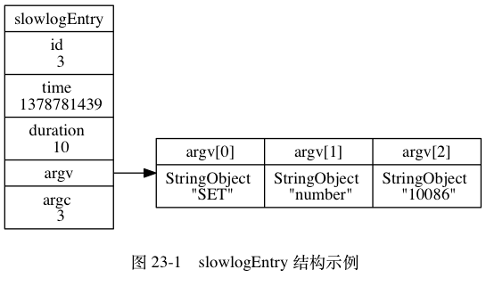

慢查询日志¶
Redis 的慢查询日志功能用于记录执行时间超过给定时长的命令请求， 用户可以通过这个功能产生的日志来监视和优化查询速度。
服务器配置有两个和慢查询日志相关的选项：
slowlog-log-slower-than选项指定执行时间超过多少微秒（1秒等于1,000,000微秒）的命令请求会被记录到日志上。举个例子， 如果这个选项的值为
100， 那么执行时间超过100微秒的命令就会被记录到慢查询日志； 如果这个选项的值为500， 那么执行时间超过500微秒的命令就会被记录到慢查询日志； 诸如此类。slowlog-max-len选项指定服务器最多保存多少条慢查询日志。服务器使用先进先出的方式保存多条慢查询日志： 当服务器储存的慢查询日志数量等于
slowlog-max-len选项的值时， 服务器在添加一条新的慢查询日志之前， 会先将最旧的一条慢查询日志删除。举个例子， 如果服务器
slowlog-max-len的值为100， 并且假设服务器已经储存了100条慢查询日志， 那么如果服务器打算添加一条新日志的话， 它就必须先删除目前保存的最旧的那条日志， 然后再添加新日志。
让我们来看一个慢查询日志功能的例子，
首先用 CONFIG_SET 命令将 slowlog-log-slower-than 选项的值设为 0 微秒，
这样 Redis 服务器执行的任何命令都会被记录到慢查询日志中，
接着将 slowlog-max-len 选项的值设为 5 ，
让服务器最多只保存 5 条慢查询日志：
redis> CONFIG SET slowlog-log-slower-than 0
OK
redis> CONFIG SET slowlog-max-len 5
OK
接着， 我们用客户端发送几条命令请求：
redis> SET msg "hello world"
OK
redis> SET number 10086
OK
redis> SET database "Redis"
OK
然后使用 SLOWLOG GET 命令查看服务器所保存的慢查询日志：
redis> SLOWLOG GET
1) 1) (integer) 4 # 日志的唯一标识符（uid）
2) (integer) 1378781447 # 命令执行时的 UNIX 时间戳
3) (integer) 13 # 命令执行的时长，以微秒计算
4) 1) "SET" # 命令以及命令参数
2) "database"
3) "Redis"
2) 1) (integer) 3
2) (integer) 1378781439
3) (integer) 10
4) 1) "SET"
2) "number"
3) "10086"
3) 1) (integer) 2
2) (integer) 1378781436
3) (integer) 18
4) 1) "SET"
2) "msg"
3) "hello world"
4) 1) (integer) 1
2) (integer) 1378781425
3) (integer) 11
4) 1) "CONFIG"
2) "SET"
3) "slowlog-max-len"
4) "5"
5) 1) (integer) 0
2) (integer) 1378781415
3) (integer) 53
4) 1) "CONFIG"
2) "SET"
3) "slowlog-log-slower-than"
4) "0"
如果这时再执行一条 SLOWLOG GET 命令，
那么我们将看到，
上一次执行的 SLOWLOG GET 命令已经被记录到了慢查询日志中，
而最旧的、编号为 0 的慢查询日志已经被删除，
服务器的慢查询日志数量仍然为 5 条：
redis> SLOWLOG GET
1) 1) (integer) 5
2) (integer) 1378781521
3) (integer) 61
4) 1) "SLOWLOG"
2) "GET"
2) 1) (integer) 4
2) (integer) 1378781447
3) (integer) 13
4) 1) "SET"
2) "database"
3) "Redis"
3) 1) (integer) 3
2) (integer) 1378781439
3) (integer) 10
4) 1) "SET"
2) "number"
3) "10086"
4) 1) (integer) 2
2) (integer) 1378781436
3) (integer) 18
4) 1) "SET"
2) "msg"
3) "hello world"
5) 1) (integer) 1
2) (integer) 1378781425
3) (integer) 11
4) 1) "CONFIG"
2) "SET"
3) "slowlog-max-len"
4) "5"
慢查询记录的保存¶
服务器状态中包含了几个和慢查询日志功能有关的属性：
struct redisServer {
// ...
// 下一条慢查询日志的 ID
long long slowlog_entry_id;
// 保存了所有慢查询日志的链表
list *slowlog;
// 服务器配置 slowlog-log-slower-than 选项的值
long long slowlog_log_slower_than;
// 服务器配置 slowlog-max-len 选项的值
unsigned long slowlog_max_len;
// ...
};
slowlog_entry_id 属性的初始值为 0 ，
每当创建一条新的慢查询日志时，
这个属性的值就会用作新日志的 id 值，
之后程序会对这个属性的值增一。
比如说，
在创建第一条慢查询日志时，
slowlog_entry_id 的值 0 会成为第一条慢查询日志的 ID ，
而之后服务器会对这个属性的值增一；
当服务器再创建新的慢查询日志的时候，
slowlog_entry_id 的值 1 就会成为第二条慢查询日志的 ID ，
然后服务器再次对这个属性的值增一，
以此类推。
slowlog 链表保存了服务器中的所有慢查询日志，
链表中的每个节点都保存了一个 slowlogEntry 结构，
每个 slowlogEntry 结构代表一条慢查询日志：
typedef struct slowlogEntry {
// 唯一标识符
long long id;
// 命令执行时的时间，格式为 UNIX 时间戳
time_t time;
// 执行命令消耗的时间，以微秒为单位
long long duration;
// 命令与命令参数
robj **argv;
// 命令与命令参数的数量
int argc;
} slowlogEntry;
举个例子， 对于以下慢查询日志来说：
1) (integer) 3
2) (integer) 1378781439
3) (integer) 10
4) 1) "SET"
2) "number"
3) "10086"
图 23-1 展示的就是该日志所对应的 slowlogEntry 结构。

![digraph {
label = "\n 图 23-2 redisServer 结构示例";
rankdir = LR;
node [shape = record];
redisServer [label = " redisServer | ... | slowlog_entry_id \n 6 | <slowlog> slowlog | slowlog_log_slower_than \n 0 | slowlog_max_len \n 5 | ... "];
slowlogEntry_5 [label = " slowlogEntry | id \n 5 | time \n 1378781521 | duration \n 61 | <argv> argv | argc \n 2 "];
slowlogEntry_1 [label = " slowlogEntry | id \n 1 | time \n 1378781425 | duration \n 11 | <argv> argv | argc \n 4 "];
more [label = "...", shape = plaintext]
redisServer:slowlog -> slowlogEntry_5 -> more -> slowlogEntry_1;
}](../../_images/graphviz-2634cbda11c253dc440086b228cff1c0fbe8efb3.png)
图 23-2 展示了服务器状态中， 和慢查询功能有关的属性：
slowlog_entry_id的值为6， 表示服务器下条慢查询日志的id值将为6。slowlog链表包含了id为5至1的慢查询日志， 最新的5号日志排在链表的表头， 而最旧的1号日志排在链表的表尾， 这表明slowlog链表是使用插入到表头的方式来添加新日志的。slowlog_log_slower_than记录了服务器配置slowlog-log-slower-than选项的值0， 表示任何执行时间超过0微秒的命令都会被慢查询日志记录。slowlog-max-len属性记录了服务器配置slowlog-max-len选项的值5， 表示服务器最多储存五条慢查询日志。
注意
因为版面空间不足的缘故，
所以图 23-2 展示的各个 slowlogEntry 结构都省略了 argv 数组。
慢查询日志的阅览和删除¶
弄清楚了服务器状态的 slowlog 链表的作用之后，
我们可以用以下伪代码来定义查看日志的 SLOWLOG GET 命令：
def SLOWLOG_GET(number=None):
# 用户没有给定 number 参数
# 那么打印服务器包含的全部慢查询日志
if number is None:
number = SLOWLOG_LEN()
# 遍历服务器中的慢查询日志
for log in redisServer.slowlog:
if number <= 0:
# 打印的日志数量已经足够，跳出循环
break
else:
# 继续打印，将计数器的值减一
number -= 1
# 打印日志
printLog(log)
查看日志数量的 SLOWLOG LEN 命令可以用以下伪代码来定义：
def SLOWLOG_LEN():
# slowlog 链表的长度就是慢查询日志的条目数量
return len(redisServer.slowlog)
另外， 用于清除所有慢查询日志的 SLOWLOG RESET 命令可以用以下伪代码来定义：
def SLOWLOG_RESET():
# 遍历服务器中的所有慢查询日志
for log in redisServer.slowlog:
# 删除日志
deleteLog(log)
添加新日志¶
在每次执行命令的之前和之后，
程序都会记录微秒格式的当前 UNIX 时间戳，
这两个时间戳之间的差就是服务器执行命令所耗费的时长，
服务器会将这个时长作为参数之一传给 slowlogPushEntryIfNeeded 函数，
而 slowlogPushEntryIfNeeded 函数则负责检查是否需要为这次执行的命令创建慢查询日志，
以下伪代码展示了这一过程：
# 记录执行命令前的时间
before = unixtime_now_in_us()
# 执行命令
execute_command(argv, argc, client)
# 记录执行命令后的时间
after = unixtime_now_in_us()
# 检查是否需要创建新的慢查询日志
slowlogPushEntryIfNeeded(argv, argc, before-after)
slowlogPushEntryIfNeeded 函数的作用有两个：
- 检查命令的执行时长是否超过
slowlog-log-slower-than选项所设置的时间， 如果是的话， 就为命令创建一个新的日志， 并将新日志添加到slowlog链表的表头。 - 检查慢查询日志的长度是否超过
slowlog-max-len选项所设置的长度， 如果是的话， 那么将多出来的日志从slowlog链表中删除掉。
以下是 slowlogPushEntryIfNeeded 函数的实现代码：
void slowlogPushEntryIfNeeded(robj **argv, int argc, long long duration) {
// 慢查询功能未开启，直接返回
if (server.slowlog_log_slower_than < 0) return;
// 如果执行时间超过服务器设置的上限，那么将命令添加到慢查询日志
if (duration >= server.slowlog_log_slower_than)
// 新日志添加到链表表头
listAddNodeHead(server.slowlog,slowlogCreateEntry(argv,argc,duration));
// 如果日志数量过多，那么进行删除
while (listLength(server.slowlog) > server.slowlog_max_len)
listDelNode(server.slowlog,listLast(server.slowlog));
}
函数中的大部分代码我们已经介绍过了，
唯一需要说明的是 slowlogCreateEntry 函数：
该函数根据传入的参数，
创建一个新的慢查询日志，
并将 redisServer.slowlog_entry_id 的值增一。
举个例子， 假设服务器当前保存的慢查询日志如图 23-2 所示， 如果我们执行以下命令：
redis> EXPIRE msg 10086
(integer) 1
服务器在执行完这个 EXPIRE 命令之后，
就会调用 slowlogPushEntryIfNeeded 函数，
函数将为 EXPIRE 命令创建一条 id 为 6 的慢查询日志，
并将这条新日志添加到 slowlog 链表的表头，
如图 23-3 所示。
![digraph {
label = "\n 图 23-3 EXPIRE 命令执行之后的服务器状态";
rankdir = LR;
node [shape = record];
redisServer [label = " redisServer | ... | slowlog_entry_id \n 7 | <slowlog> slowlog | slowlog_log_slower_than \n 0 | slowlog_max_len \n 5 | ... "];
slowlogEntry_6 [label = " slowlogEntry | id \n 6 | time \n 1378800320 | duration \n 14 | <argv> argv | argc \n 3 "];
slowlogEntry_1 [label = " slowlogEntry | id \n 1 | time \n 1378781425 | duration \n 11 | <argv> argv | argc \n 4 "];
more [label = "...", shape = plaintext]
redisServer:slowlog -> slowlogEntry_6 -> more -> slowlogEntry_1;
}](../../_images/graphviz-e0bdf37ffbc28fd641a67b997f3094632d17ec9c.png)
注意，
除了 slowlog 链表发生了变化之外，
slowlog_entry_id 的值也从 6 变为 7 了。
之后，
slowlogPushEntryIfNeeded 函数发现，
服务器设定的最大慢查询日志数目为 5 条，
而服务器目前保存的慢查询日志数目为 6 条，
于是服务器将 id 为 1 的慢查询日志删除，
让服务器的慢查询日志数量回到设定好的 5 条。
删除操作执行之后的服务器状态如图 23-4 所示。
![digraph {
label = "\n 图 23-4 删除 id 为 1 的慢查询日志之后的服务器状态";
rankdir = LR;
node [shape = record];
redisServer [label = " redisServer | ... | slowlog_entry_id \n 7 | <slowlog> slowlog | slowlog_log_slower_than \n 0 | slowlog_max_len \n 5 | ... "];
slowlogEntry_6 [label = " slowlogEntry | id \n 6 | time \n 1378800320 | duration \n 14 | <argv> argv | argc \n 3 "];
slowlogEntry_2 [label = " slowlogEntry | id \n 2 | time \n 1378781436 | duration \n 18 | <argv> argv | argc \n 3 "];
more [label = "...", shape = plaintext]
redisServer:slowlog -> slowlogEntry_6 -> more -> slowlogEntry_2;
}](../../_images/graphviz-fade8035f6454ed64fa7c2d7f9f43ff40dbb8e0f.png)
重点回顾¶
- Redis 的慢查询日志功能用于记录执行时间超过指定时长的命令。
- Redis 服务器将所有的慢查询日志保存在服务器状态的
slowlog链表中， 每个链表节点都包含一个slowlogEntry结构， 每个slowlogEntry结构代表一条慢查询日志。 - 打印和删除慢查询日志可以通过遍历
slowlog链表来完成。 slowlog链表的长度就是服务器所保存慢查询日志的数量。- 新的慢查询日志会被添加到
slowlog链表的表头， 如果日志的数量超过slowlog-max-len选项的值， 那么多出来的日志会被删除。